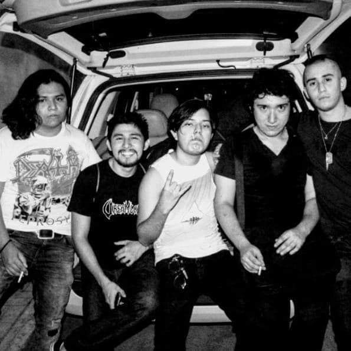
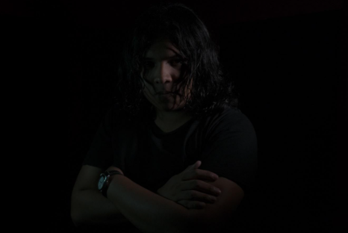
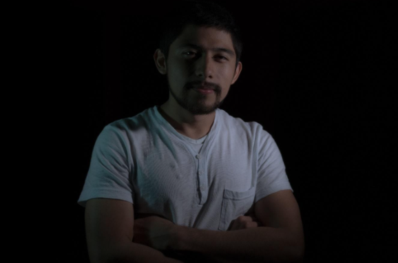
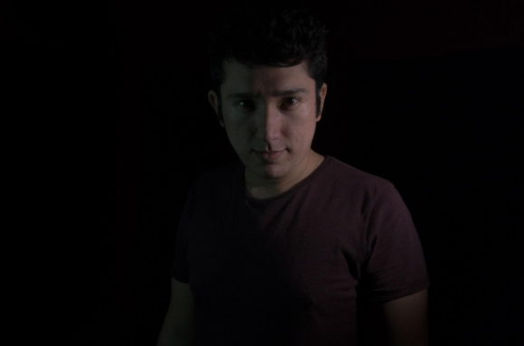

Historia
Dreamlord es una banda de death metal melódico originaria de Cancún, México. Ha estado activa desde 2011 como un proyecto solitario cuando se empezó a componer el primer material, sin embargo, no fue hasta 2017 que se
integraron los
elementos
restantes para dar el paso siguiente y convertirse en banda.
Dreamlord usa la etiqueta de death metal melódico para su fácil identificación para la audiencia, sin embargo incorpora elementos de otros subgéneros del metal y otros tipos de música también.
Miembros
Jomar V. Medina (Voz/Guitarra)

Comenzó a estudiar música a la edad de 7 años. Es el compositor de Dreamlord, además de ser el guitarrista y vocalista de la banda.
Álvaro Sosa (Teclados)

Alumno de Emöke Ujj, aclamada pianista húngara residente de Cancún, tiene estudios en piano clásico, jazz y demás estilos.
Alex Herrera (Baterías)

Con 10 años de experiencia en la música, tanto estudiándola como ejerciendo en el medio desde la música jazz hasta el metal de la ciudad, es considerado de los mejores bateristas de la ciudad debido a su
versatilidad y
técnica.